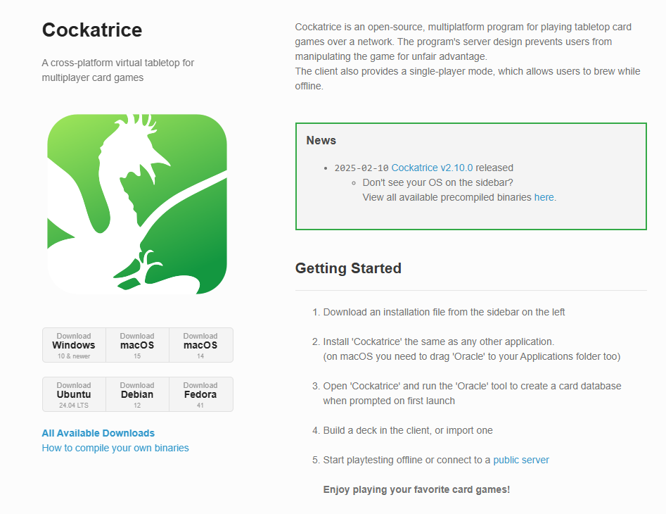
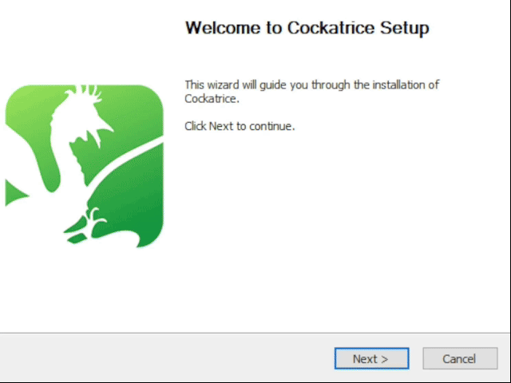
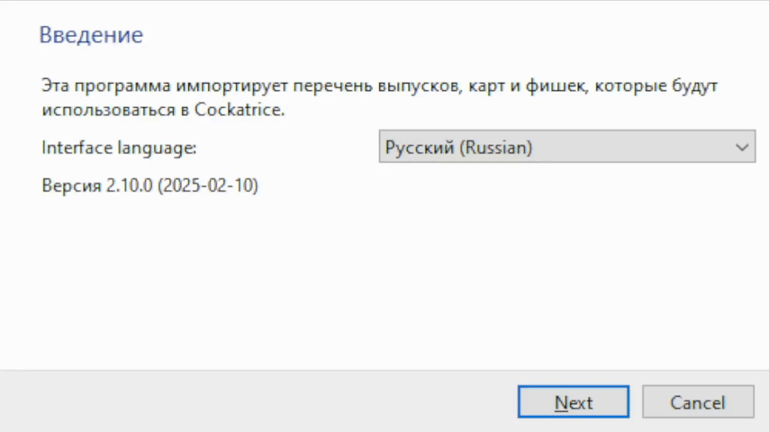
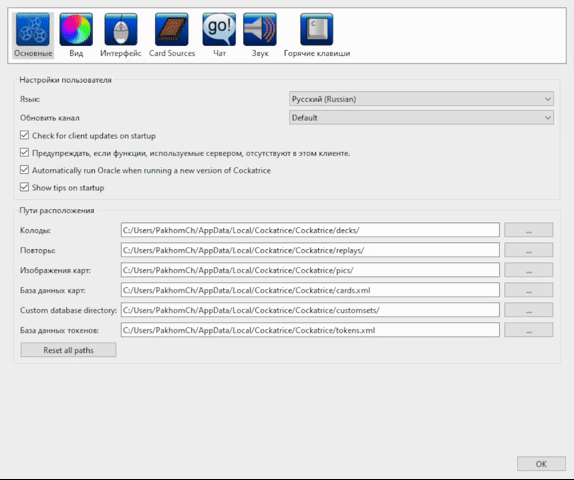
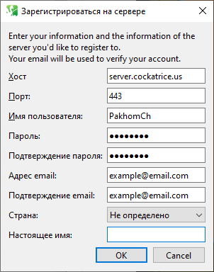
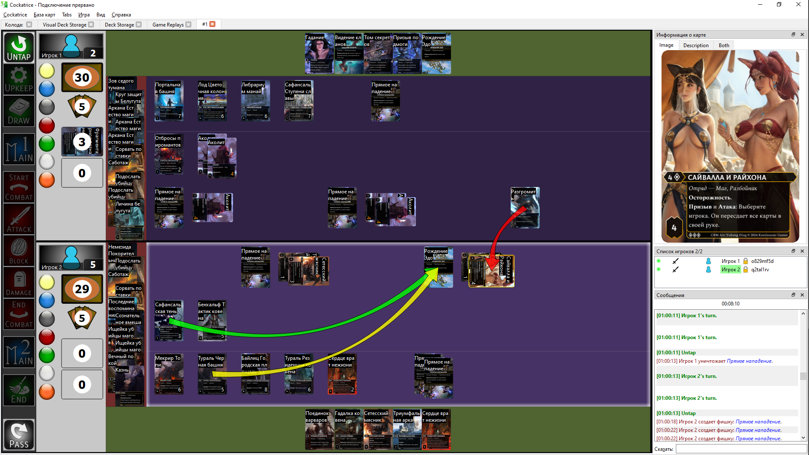
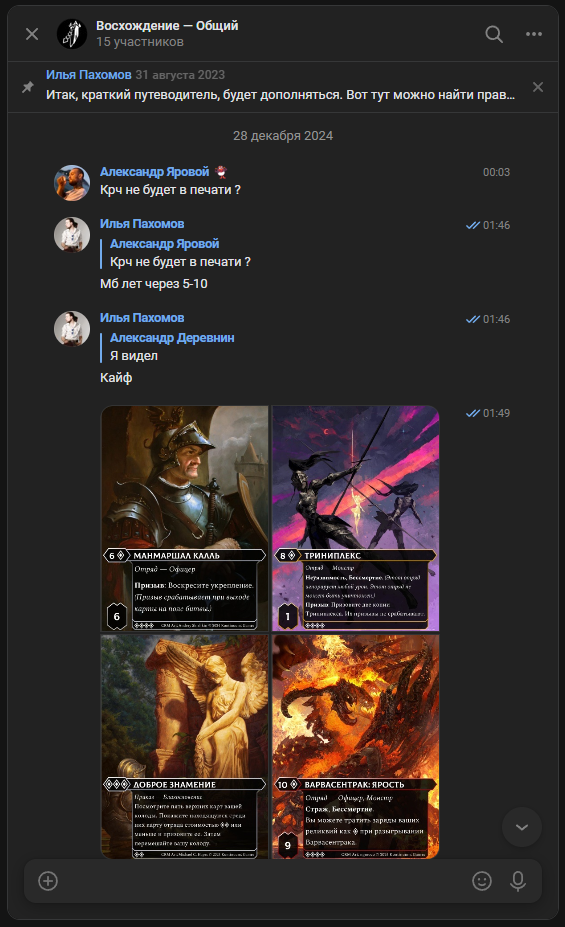

Шаг 1: Загрузка Cockatrice
Для начала вам необходимо установить Cockatrice. Перейдитие на сайт, выберите вашу операционную систему, а затем скачайте и запустите установщик.

Шаг 2: Установка Cockatrice
Следуюя рекомендациям программы, установите Cockatrice на ваше устройство. Завершив установку, Cockatrice запустится. Если этого не произошло, запустите программу самостоятельно.

Шаг 3: Импортер Oracle
При запуске Cockatrice вас встретит импортер Oracle. Следуя примеру и указаниям программы, замените ссылки на скачивание карт на ссылки, которые найдете здесь. Если вам после этого предложать включить сеты, соглашайтесь.

Шаг 4: Настройка иллюстраций
Теперь в верхнем меню Cockatrice нажмите "Cockatrice", затем "Настройки", "Card Sources", зеленый плюсик, затем вставьте в окно третью ссылку из прошлого пункта и нажмите "ОК". Появившуюся строку перетяните на самый вверх, затем нажмите "ОК", закрыв окно.

Шаг 5: Регистрация аккаунта
Теперь в верхнем меню Cockatrice нажмите "Cockatrice", затем "Регистрация на сервере..." и заполните поля в появившемся окне. При желании настоящее имя можно не указывать. Далее вам на почту придет письмо с кодом, который необходимо будет указать для активации аккаунта.

Шаг 6: Готово!
Теперь, когда вы установили Cockatrice и зарегистрировали свой аккаунт, вы готовы к игре. Для того, чтобы освоиться с Cockatrice, вы можете изучить руководства с оффициальной вики приложения.

Шаг 7: Поиск оппонента
